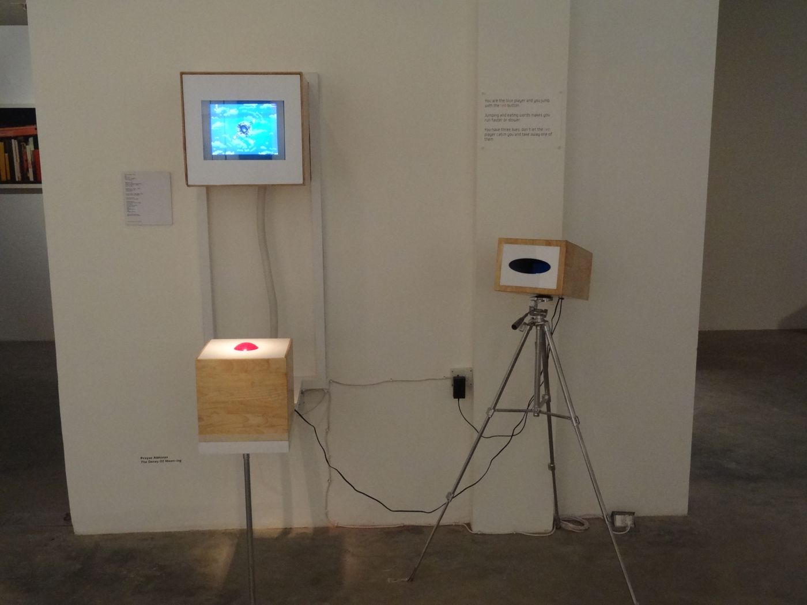
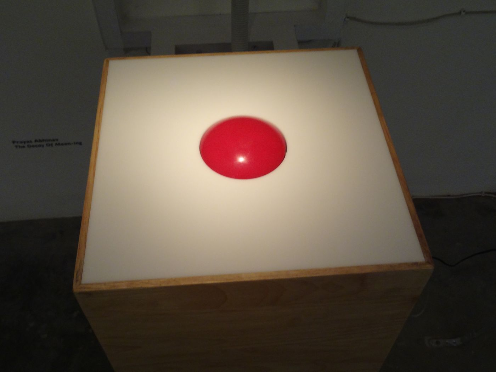
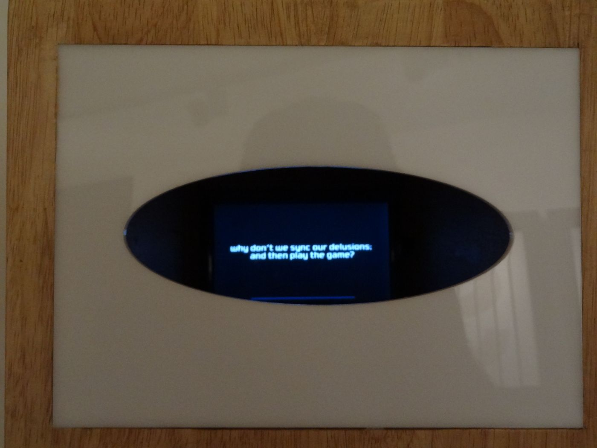

A game I made in 2011, based on a database of value-laden words. It has two avatars of me chasing each other round a planet. Each one's speed depends on the value of the word it meets when it jumps. As the value of each word is dynamic and variable, this becomes a complex process. In a statistical analysis of literature, anything can be expressed via anything.
PlayIn your browser, one player against the computer. To jump, press the 1 key or the space bar, or tap the screen.
I showed it in 2011 at Words: a user's manual, an exhibition curated by Himali Singh Soin at Exhibit 320 in Lado Sarai, New Delhi. It ran on a small screen set in a wooden box on the wall, beside an oval window that asked, why don't we sync our delusions, and then play the game?, and it was played with one large red button.



The page runs the 2011 code, ported line by line from Lua, which it was written in, to JavaScript. It reads the same word file and keeps the original rules, timings and quirks. I have kept it as it was and not improved it.